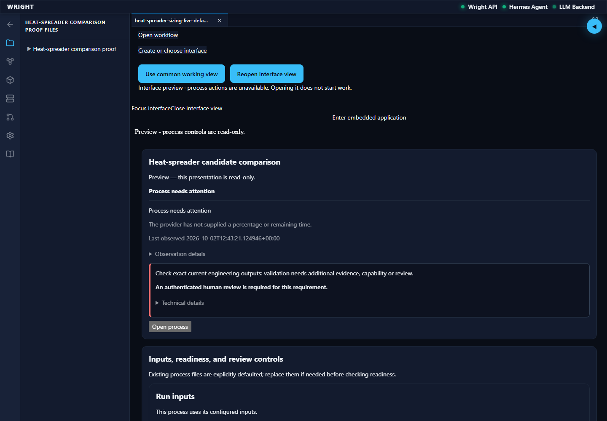
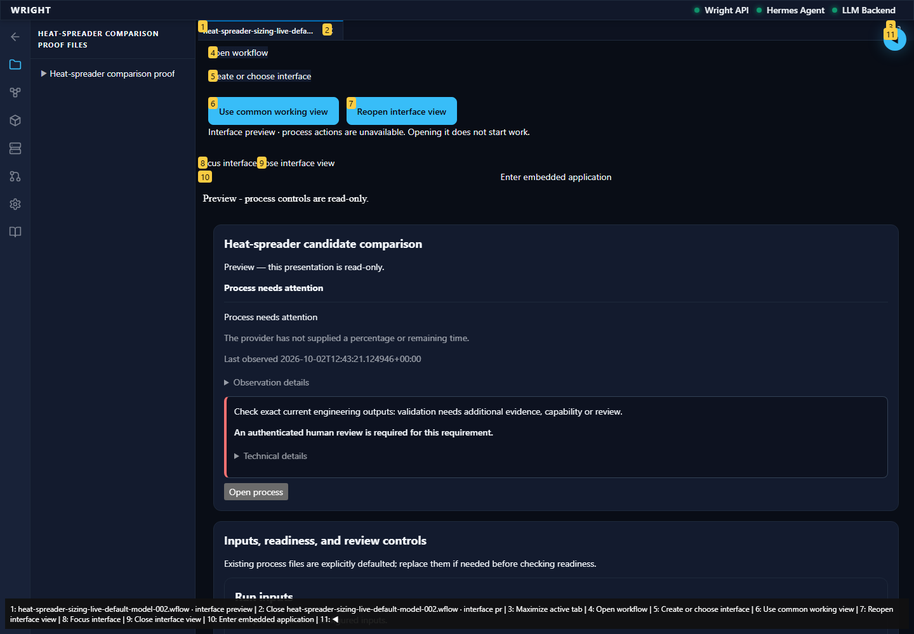
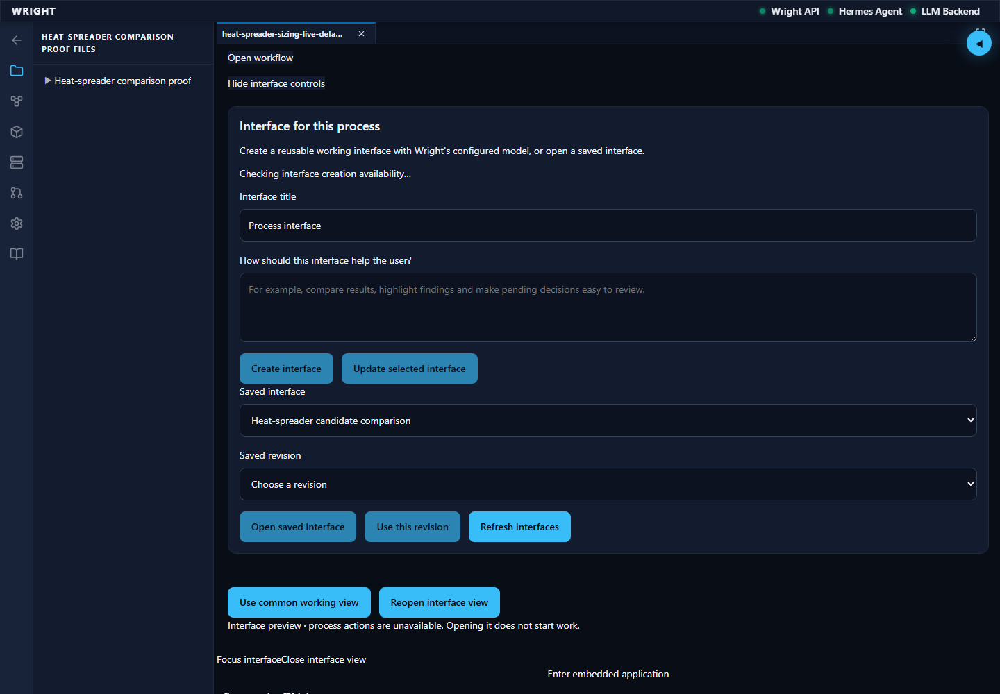
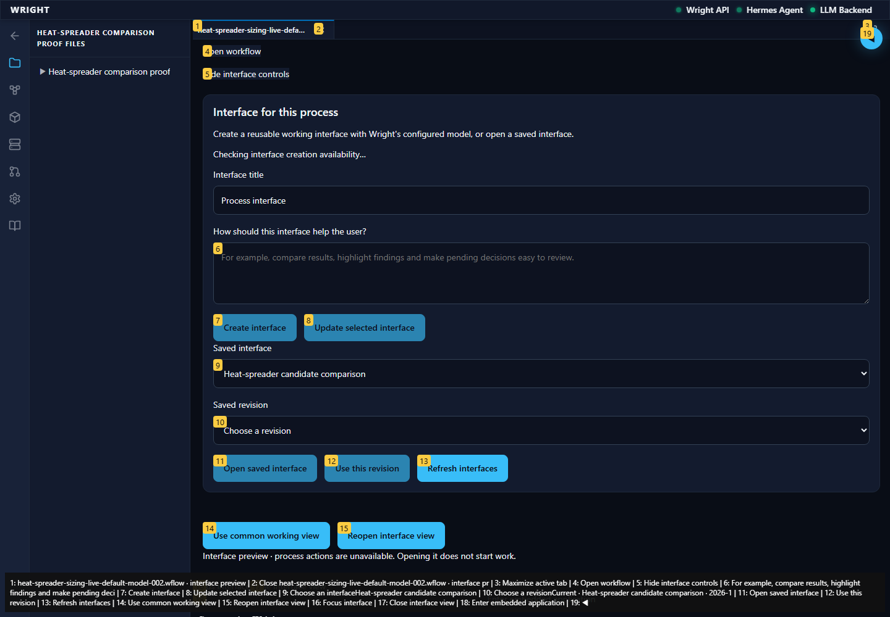
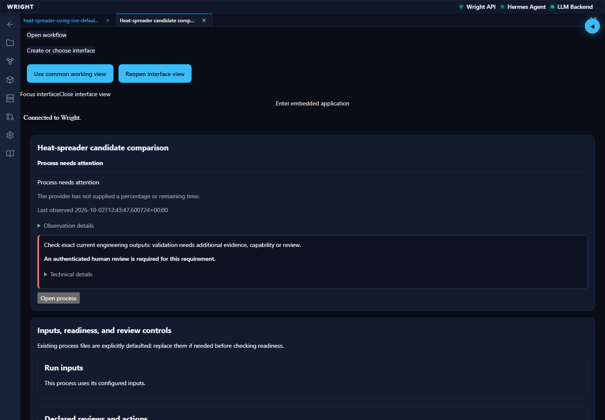
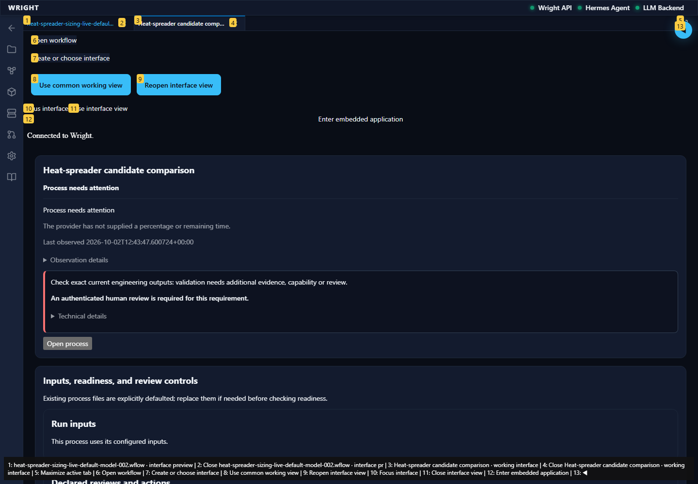

Normal Wright workspace and actual isolated engineering run. No mocked routes or physical action.
Status: pass
Recover the exact already generated preview in the workspace.
Expected: Exact existing read-only preview connected with recorded heat results.
Actual: Existing preview connected; 18 result cards visible.
raw 
annotated 
Retain the exact previewed build with its binding and provenance.
Expected: Exact existing revision saved.
Actual: Existing preview revision saved.
raw 
annotated 
The recovered built interface opens in a Wright workspace tab.
Expected: Saved interface connects to the same heat run.
Actual: Saved interface connected with 18 results and Wright styling.
raw 
annotated 